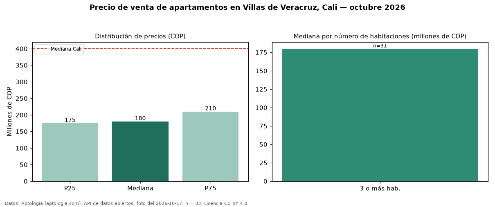

Precio de venta de apartamentos en Villas de Veracruz, Cali — octubre 2026
Con 33 avisos vigentes, el precio mediano de apartamentos en venta en Villas de Veracruz, Cali es COP 180 millones. Frente al total de Cali (COP 400 millones), el barrio está 55 % por debajo. Por mediana, es el puesto 73 de 74 barrios de Cali con al menos 30 avisos de apartamentos en venta: entre los más económicos. El segmento con más oferta es el de 3 o más habitaciones (31 avisos, mediana COP 180 millones). 27 % de los avisos incluye parqueadero, y su mediana (COP 230 millones) está 28 % por encima de la general. El aviso más barato pide COP 140 millones y el más caro COP 1,20 mil millones. 12 % de los anunciantes publica un teléfono de contacto. Datos: Aptología (aptologia.com), API de datos abiertos, licencia CC BY 4.0 — https://www.aptologia.com/venta/cali/villas-de-veracruz. Archivos: PDF de 2 páginas, CSV con las cifras y gráfica PNG.

| Avisos únicos | 33 |
|---|---|
| Percentil 25 | COP 175.000.000 |
| Mediana | COP 180.000.000 |
| Percentil 75 | COP 210.000.000 |
Fuente: avisos vigentes de portales inmobiliarios recopilados por Aptología, deduplicados (mínimo 30 avisos únicos por celda). Precios pedidos, no cerrados. Fecha: 2026-10-18.